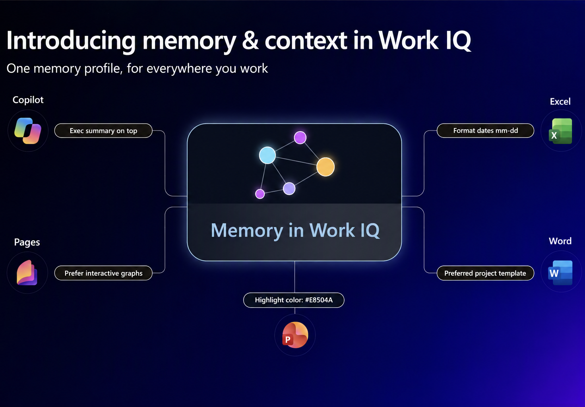
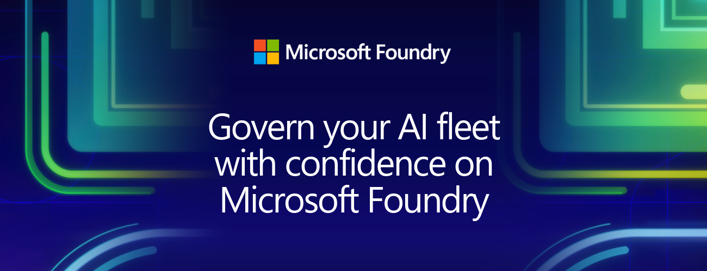

| Telecommunications, Media & Gaming edition · Week of November 23, 2026 |
|
 | | The Brief |
Telecommunications, Media & Gaming edition
Copilot that remembers, and a faster path off legacy CRM
|
|
3-min read · 734 words Morning. Microsoft shipped a lot this week. I kept the part that matters to telecom and media, and it fits in a few minutes. For telecom and media leaders, this week's news covers a more personal Copilot, a guided CRM move and governance for agent fleets. |
| |
| | | Can Copilot remember how your team works? | | Can agents speed up a CRM migration? |  | Who governs the agents in your network ops? |
|
|
|
 |
| | Copilot now remembers how you workWhat's new: New memory and context in Work IQ let Copilot carry your preferences and past chats forward, so you stop re-explaining your role. Users and admins can review or switch it off. | Why it matters for telecom and media: Care and network teams spend less time re-explaining context, so Copilot answers fit your plans, policies and tone sooner. |
Source: Microsoft Copilot Blog · Nov 18 |
|
|
| | An agent-led path off legacy ERP and CRMWhat's new: Dynamics 365 Activate's CRM experience for Salesforce moves is generally available, and its ERP experience, including SAP ECC discovery, is in private preview. Your team approves every decision. | Why it matters for telecom and media: Operators with large Salesforce estates now have a generally available, agent-led path to Dynamics 365, with people approving each step. |
Source: Microsoft Dynamics 365 Blog · Nov 19 |
|
 |
| | | Story 3 |
One view of every agent, model and toolWhat's new: Foundry adds built-in governance: an identity for every agent, policies for approved models and tools, cost controls, and a fleet view of activity and compliance across projects. | Why it matters for telecom and media: As network and care agents multiply, operators can see owners, approved tools and spend in one place. |
Source: Microsoft Foundry Blog · Nov 18 |
|
Customer story |
| | 95%+ billing agent accuracy in production |
Telstra puts a billing agent into productionTelstra runs a billing agent built with Microsoft that reached more than 95% accuracy in production, helping customers with bill questions. |
|
| | One move for Marketing · Telecom, Media & Gaming Write three versions of a launch email in one goDifferent audiences need different hooks. Get three drafts side by side, then keep the best lines. Copy this prompt Draft 3 versions of a short email announcing our new streaming bundle: one for families, one for sports fans, one for small businesses. Under 120 words each, with a subject line and one clear call to action. |
Where it works: Works in Copilot Chat with web answers. Why it works: it gives Copilot a goal, context, details and the data to use. New in Copilot: Look for three tabs in the Copilot app: Chat for quick questions and drafts, Cowork for longer work you hand off, and Code for building small tools. A Work IQ switch decides whether answers use your work data or only the web. |
|
| | Upcoming events |
Convergence 2026
Dec 8–11, 2026 · Miami Beach, FL
Dynamics 365 and agent sessions from the teams that build them. |
| |
|
|
| | 1 for the road Scaling Copilot? Know the number first. Admins can set Copilot Credit spending limits by user, group or tenant, add budget alerts and track usage in one place in the Microsoft 365 admin center. |
|
Forwarding this? Keep me on the Cc and I'll add them to next week's list. We never add anyone who hasn't asked. |
|
How this Brief was made
A small team of AI agents in Microsoft 365 Copilot Cowork found this week's public updates, wrote each story once and tailored them for telecom and media. A person reviews every issue before it is sent. |
|
 | | The Brief |
|
All information is publicly available from Microsoft. All information is publicly available from Microsoft. You're receiving this because you opted in with your work email.
Manage preferences · Unsubscribe (reply STOP) · Privacy
Made with Microsoft Copilot Cowork + Power Platform
Curated by Nick Fratello, Microsoft · Connect on LinkedIn
Microsoft Corporation, One Microsoft Way, Redmond, WA 98052 |
|